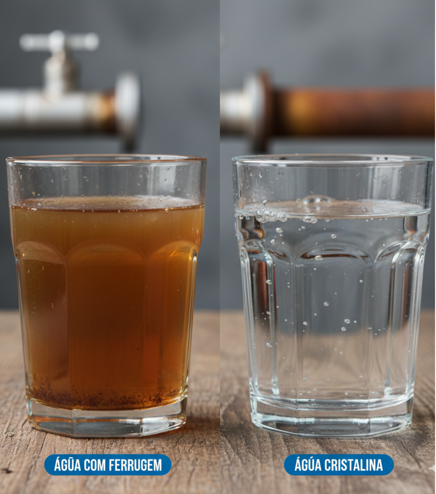

Soluções Técnicas para Remoção de Ferro e Manganês
A
presença de ferro e manganês na água é comum em poços artesianos e pode comprometer tubulações,
equipamentos e a
qualidade do consumo. A correção exige análise técnica e dimensionamento adequado do sistema de
tratamento.
A Aqua Engenharia desenvolve projetos personalizados para remoção eficiente desses minerais, garantindo
desempenho,
durabilidade e conformidade com os padrões de potabilidade



⚠️ Os Problemas que Ferro e Manganês causam:
- Na sua Casa: Manchas marrom-avermelhadas em vasos sanitários, pisos, roupas e louças. Entupimento de tubulações, chuveiros e válvulas. Redução da vida útil de eletrodomésticos.
- Na sua Saúde: Embora a ingestão direta não seja sempre tóxica em pequenas quantidades, o consumo contínuo pode causar problemas gastrointestinais, e o manganês, em excesso, é associado a problemas neurológicos a longo prazo. Além disso, a presença desses minerais pode mascarar outros contaminantes e afetar o sabor de alimentos e bebidas.

Seu Caminho para Água Pura em 5 Passos Simplificados:
Coleta e Análise: Realizamos testes rigorosos para entender a
composição real da sua água e identificar o nível de Ferro e Manganês.
Diagnóstico Técnico: Mapeamos seu consumo, a vazão necessária
e definimos o tipo e tamanho exato do filtro.
Solução Customizada: Projetamos um sistema de tratamento
durável e de fácil manutenção, especificamente para sua casa ou negócio.
Instalação Profissional: Montagem e calibração feitas por
especialistas para garantir o uso imediato e perfeito do seu filtro.
Acompanhamento Contínuo: Suporte contínuo e orientação para
garantir que sua água permaneça pura e seu filtro operando com máxima eficiência.
- Nossos filtros são projetados com engenharia de ponta para remover eficientemente Ferro e Manganês, entregando água pura e cristalina em todos os pontos de consumo.
- Tanques em PRFV (Fibra de Vidro): A máxima resistência contra corrosão e pressão. Nossos tanques são leves, duráveis e construídos para suportar as condições mais exigentes por décadas.
- Cabeçotes Automáticos: Esqueça a preocupação com a limpeza do filtro. Nossos sistemas realizam a retrolavagem e a regeneração da mídia filtrante automaticamente, garantindo performance contínua e sem intervenção manual.
- Mídias Filtrantes Específicas: Utilizamos leitos filtrantes avançados que oxidam e retêm o Ferro e Manganês dissolvidos, entregando uma água livre de cor, cheiro e sabor metálico.